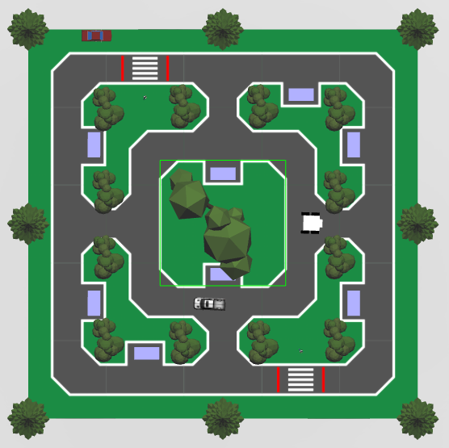
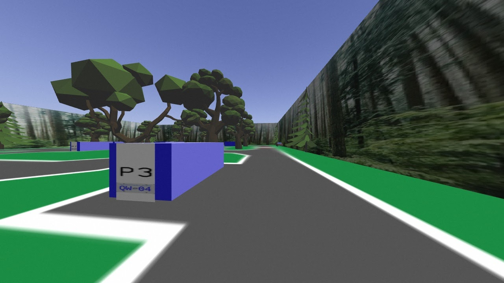
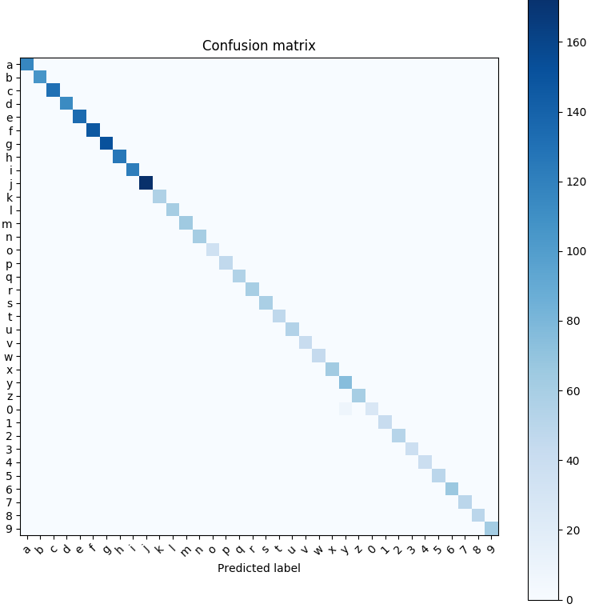

ENPH 353 Project

Context
This past term, I took ENPH 353, which is a project based course in machine learning and computer vision. For the first half of the course, we were taught how to use Linux, ROS, and Python libraries such as Keras, OpenCv, and Tensorflow to give us a look at the techniques used in computer vision, neural networks and reinforcement learning.
The second half of the course involved pairing up with one other student, and applying our knowledge to develop an autonomous agent which, using only input from a camera, could navigate a course, avoid obstacles and detect the lisence plates from parked cars in a Gazebo Gym simlulated environment developed by our instructor. As such, the agent accomplished all the tasks that a real life parking enforcement person would do.
Key elements of our agent
PID Line Following
 In order to control our robot, (using ROS), we read images from a camera on top of our robot, and used that information to publish speed values to our robot.
Analysis of each frame from the video feed allowed us to identify the road and where our robot was relative to the center of it. We created and tuned a PID to allow our robot to navigate the track and stay in the middle of the road. We also designed our agent to avoid pedestrians by waiting at crosswalks until they were clear.
Detection of parked cars
On top of navigating the track, our robot was also required to identify license plates from parked cars. The first challenge we had to overcome for accomplishing this task was to be able to produce a clear shot of the license plate as our agent drove by a car. Doing this involved using the full range of classical computer vision strategies at our disposal, including applying masks to filter out certain colours, corner and edge detection, image errosion and dilation to improve clarity and locate centers of mass, and perspective transforms.
 All together, we developed an algorithm that could reliably pull out the license plate of a car (if it existed) as we drove around the track. We could then pass this data on to our CNN for determining the number on the plate.
All together, we developed an algorithm that could reliably pull out the license plate of a car (if it existed) as we drove around the track. We could then pass this data on to our CNN for determining the number on the plate.
Convolution neural network
 Having driven to a car and retrived a clear image of it's license plate, the last challenge was to identify the letters and numbers on the plate using machine learning. We tried multiple approaches for doing this, including generating random clean plate data and applying transformations to the data (to mimic what would be seen by the robot in simulation) to train our CNN. Eventually, we were able to create a excellent model by collecting images of plates from the simulation, manually labeling them, and using them to train a plate recognition model. The image on the left is a confusion matrix we created for our model to understand it's accuracy.
In order to not reveal our code to future students, our instructor has asked that we keep our repo for this project private. However, please check out our detailed final report here for a much more in depth look at our software architecture, pedestrian and vehicle avoidance, neural network, and more.